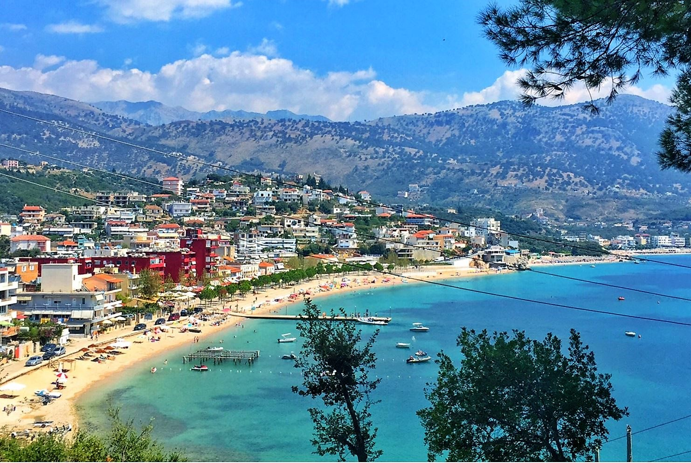
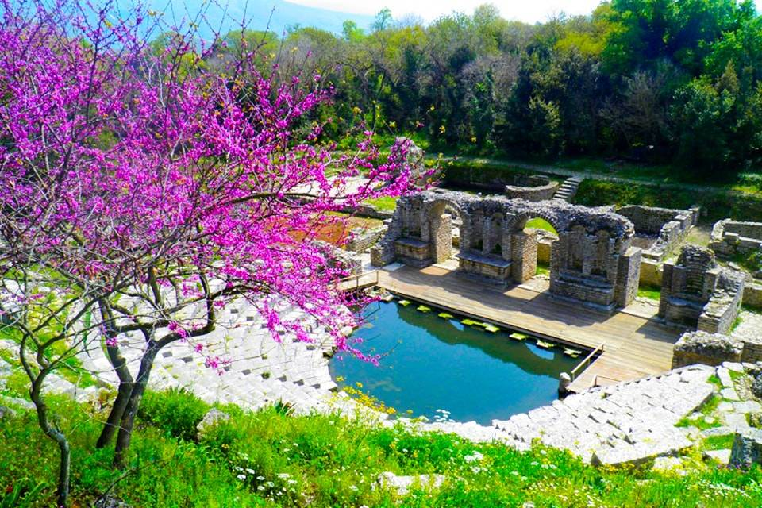
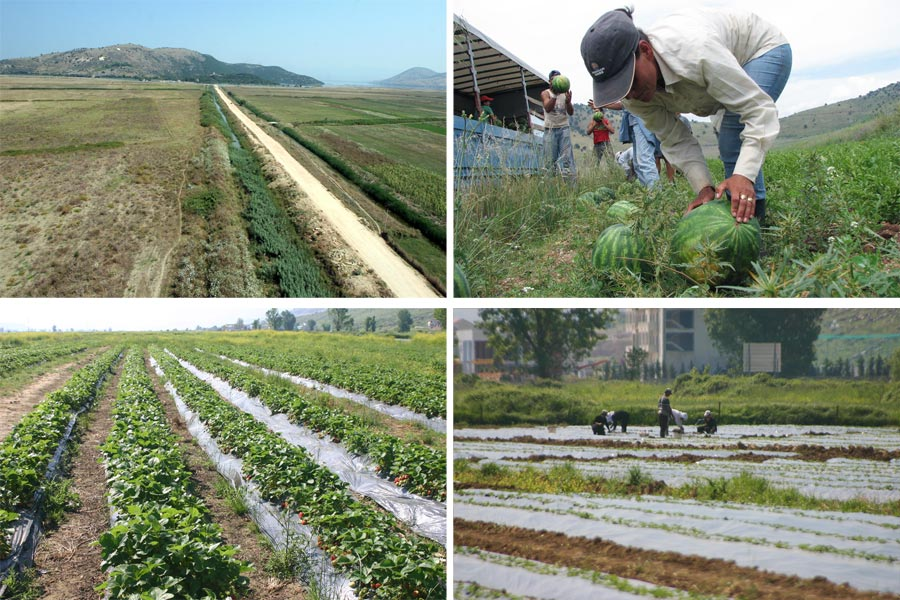
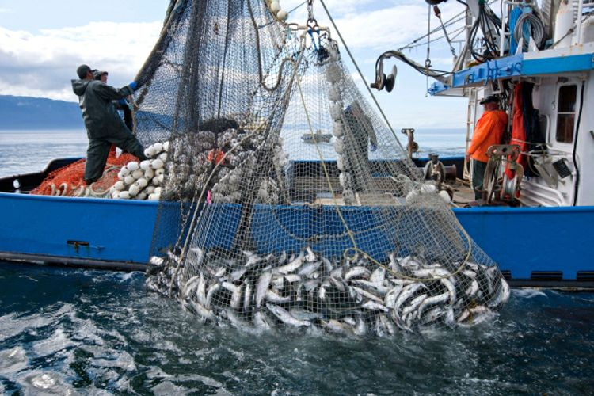

TURIZMI DHE EKONOMIA NË SHQIPËRINË E JUGUT
TURIZMI:
Turizmi është një sektor shumë i rëndësishëm i rajonit,i cili përfaqësohet me të gjitha degët e tij. Peshën kryesore e zë turizmi blu,
zhvillimi i të cilit favorizohet nga plazhet e bukura shkëmbore të Jonit, peisazhet e rralla natyrore, vera e zgjatur mesdhetare, biodiversiteti i pasur dhe nga një
rrjet i zhvilluar hotelerie dhe shërbimesh (sidomos përgjatë Rivierës dhe në qytetin e Sarandës). Vitet e fundit, një zhvillim të madh ka njohur edhe turizmi kulturor,
sidomos pas futjes së Butrintit dhe Gjirokastrës në Listën e Trashëgimisë Botërore. Rajoni jugor është një nga rajonet më të zhvilluar në Shqipëri përsa i përket
turizmit. Ai është një rajon i cili mbart vlera të mëdha turistike për faktin se na ofron dhe turizëm malor dhe detar. Disa nga vendet më të spikatura në këtë rajon
janë: Saranda,Vlora, Himara etj, që I perkasin turizmit detar. Turizmi malor shtrihet në Tomorr dhe në Nëmërçkë dhe ai kulturor në Gjirokastër, Butrint etj.
Bregdeti Jon fillon nga Uji i Ftohtë në Vlorë dhe vazhdon me disa ndërprerje të vogla te kepi i Stillos. Plazhet dhe gjiret ofrojnë mundësi më të mëdha për zhytje,
vozitje, peshkim etj. Bregu i Rivierës Shqiptare karakterizohet nga temperaturë të larta. Rrjedhimisht kulturat dhe pemët subtropikale gjejnë kushtet e favorshme për
t’u rritur. Riviera është një nga bukuritë e rralla të natyrës Shqiptare dhe një nga vendet më piktoreske të Mesdheut, me një potencial turistik të lartë, i cili në
vitet e fundit ka filluar të përdoret dhe zhvillohet gjerësisht. Në jug ka shumë fakte historike,objekte kulturore dhe arkeologjike me mjaft vlera për t’u vizituar,të
cilat janë gjurmë dhe dëshmi e gjallë e një popullimi që në erën Paleolitike. Në lashtësi shumë qytete të rëndësishme ilire lulëzuan pikërisht përgjatë bregdetit.
Edhe gjatë mesjetës disa nga qytetet bregdetare janë dalluar për zhvillimin e tyre duke ofruar një trashëgimi të pasur kulturore, e cila është materializuar në
monumentet e shumta kulturore, të cilat mund t’i ndeshim në gjithë bregdetit shqiptar.


EKONOMIA
Ekonomia bujqësore është sektori kryesor i ekonomisë së rajonit. Përgjatë viteve, struktura e këtij sektori ka pësuar një sërë ndryshimesh.
Deri në vitin 1945, peshën kryesore të tij zinte blegtoria, pasi sipërfaqja bujqësore ishte e kufizuar për shkak të përmbytjeve të shpeshta nga lumenjtë dhe mungesës
se digave mbrojtëse. Pas vitit 1945, investimet e bëra per bonifikimin e tokave, sistemimin e shtretërve të lumenjeve, tarracimin e kodrave të bregdetit dhe për
përdorimin bujqësor të plehrave kimike, sollën rritjen e sipërfaqes së kultivuar dhe të rendimenteve bujqësore. Kështu, nga viti 1945 deri në gjysmën e parë të viteve
"80, bujqësia zinte peshën kryesore të ekonomisë bujqësore. Pas ‘90-es, privatizimi i tokave dhe kërkesat e ekonomisë së tregut shoqëruan me rënien e prodhimit të
madh bujqësor dhe orientimin drejt fermave të vogla individuale. Bujqësia është përqendruar kryesisht në Fushën e Vurgut, të Dropullit dhe përgjatë luginave të Vjosës,
Drinosit dhe dallon për kultivimin: e drithërave të bukës, të cilat mbillen nëFushën e Vurgut, dhe të Dropullit; e ullinjve që kultivohen në Rivierën shqiptare, si dhe
qershitë dhe kumbullat që kultivohen kryesisht në Permet ,Skrapar; e vreshtarisë , të
përqëndruar kryesisht në Përmet, Skrapar dhe Konispol; bostanit në Fushën e Vrinës; foragjerëve ne zonat fushore të rajonit, si dhe të perimeve, kryesisht për konsum
familjar. Banorët vendas përpunojnë edhe bimë të ndryshme mjekësore, të cilat rriten kryesisht në shpatet e maleve. Peshkimi është i përqëndruar përgjatë Rivierës, në
Sarandë dhe në Liqenin e Butrintit,i cili dallohet për rritjen dhe eksportin e midhjes.

